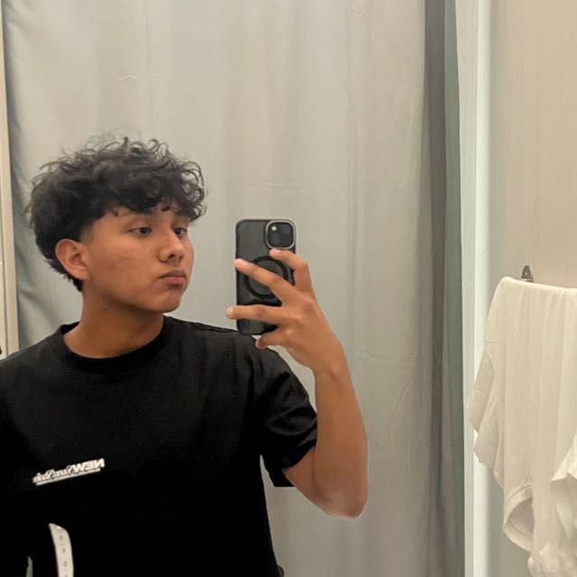

Estudiante de Administración de Negocios - UCSP
¡Hola! Soy Juan Raúl Condori Apaza, estudiante de Administración de Negocios en la Universidad Católica San Pablo. Me encanta crear, pensar distinto y convertir ideas en proyectos que realmente funcionen. Creo que la estrategia, la innovación y la tecnología pueden transformar cualquier negocio. Disfruto los retos, trabajar en equipo y dar vida a ideas que empiezan con una chispa y terminan generando impacto.
Correo: juanraul381@gmail.com
LinkedIn: Juan Raúl Condori Apaza